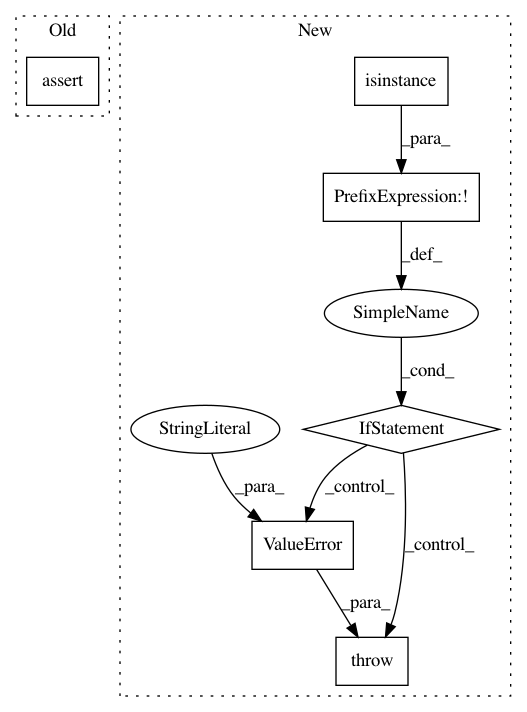

df7d58f662b49ffe56ca414821e480f76144e96b,nussl/audio_signal.py,AudioSignal,audio_data,#AudioSignal#,209
Before Change
@audio_data.setter
def audio_data(self, value):
assert isinstance(value, np.ndarray), "Type of self.audio_data must be np.ndarray!"
if value.ndim > 1 and value.shape[constants.CHAN_INDEX] > value.shape[constants.LEN_INDEX]:
warnings.warn("self.audio_data is not as we expect it. Transposing signal...")
value = value.T
After Change
if value is None:
self._audio_data = None
if not isinstance(value, np.ndarray):
raise ValueError("Type of self.audio_data must be of type np.ndarray!")
if value.ndim > 1 and value.shape[constants.CHAN_INDEX] > value.shape[constants.LEN_INDEX]:
warnings.warn("self.audio_data is not as we expect it. Transposing signal...")
value = value.T
In pattern: SUPERPATTERN
Frequency: 3
Non-data size: 6
Instances
Project Name: interactiveaudiolab/nussl
Commit Name: df7d58f662b49ffe56ca414821e480f76144e96b
Time: 2017-08-08
Author: ethanmanilow@gmail.com
File Name: nussl/audio_signal.py
Class Name: AudioSignal
Method Name: audio_data
Project Name: interactiveaudiolab/nussl
Commit Name: 9d9ef625dccb7ba0ed3295f18d90de9d6dd59469
Time: 2017-04-04
Author: ethanmanilow@gmail.com
File Name: nussl/audio_signal.py
Class Name: AudioSignal
Method Name: __mul__
Project Name: interactiveaudiolab/nussl
Commit Name: df7d58f662b49ffe56ca414821e480f76144e96b
Time: 2017-08-08
Author: ethanmanilow@gmail.com
File Name: nussl/audio_signal.py
Class Name: AudioSignal
Method Name: stft_data